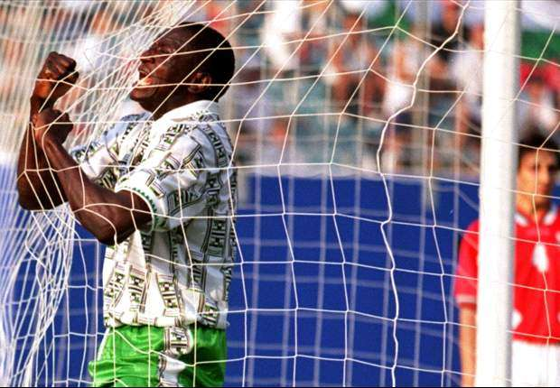

The man who scored Nigeria's first worldcup goal
"There are no words to describe all Rashidi Yekini did for Nigerian Football. Thanks for the classic moments legend!"~ Austin Okon-Akpan, Lead Sports Producer, Presenter and Correspondent at Channels Television
Written and coded by Olawale AYODELE.